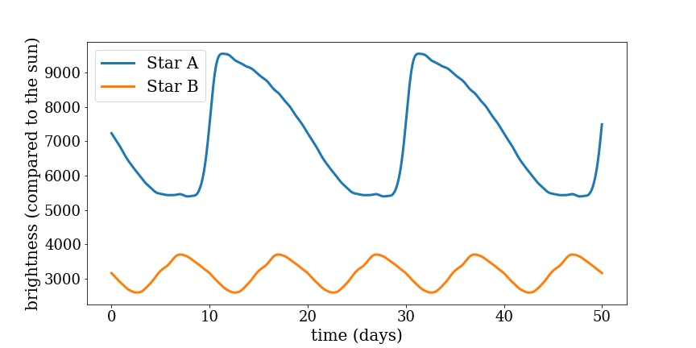
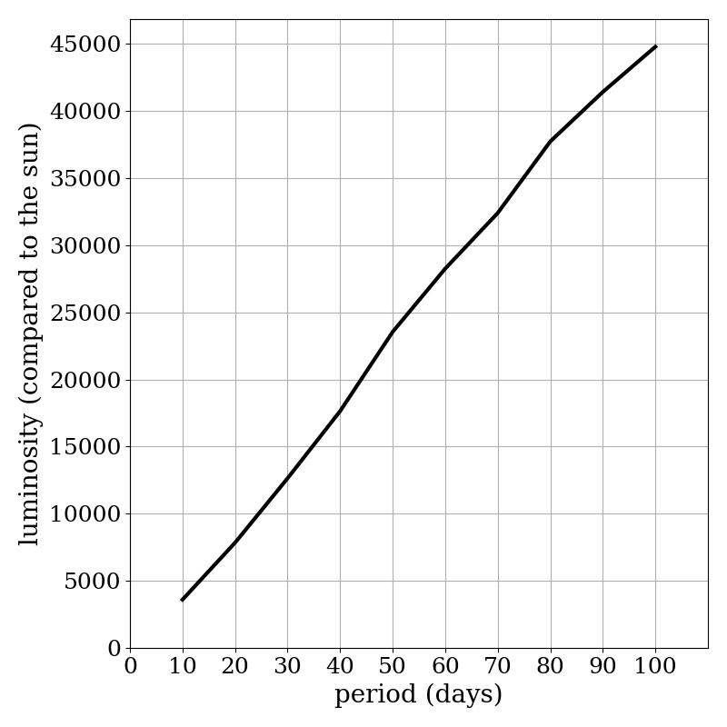
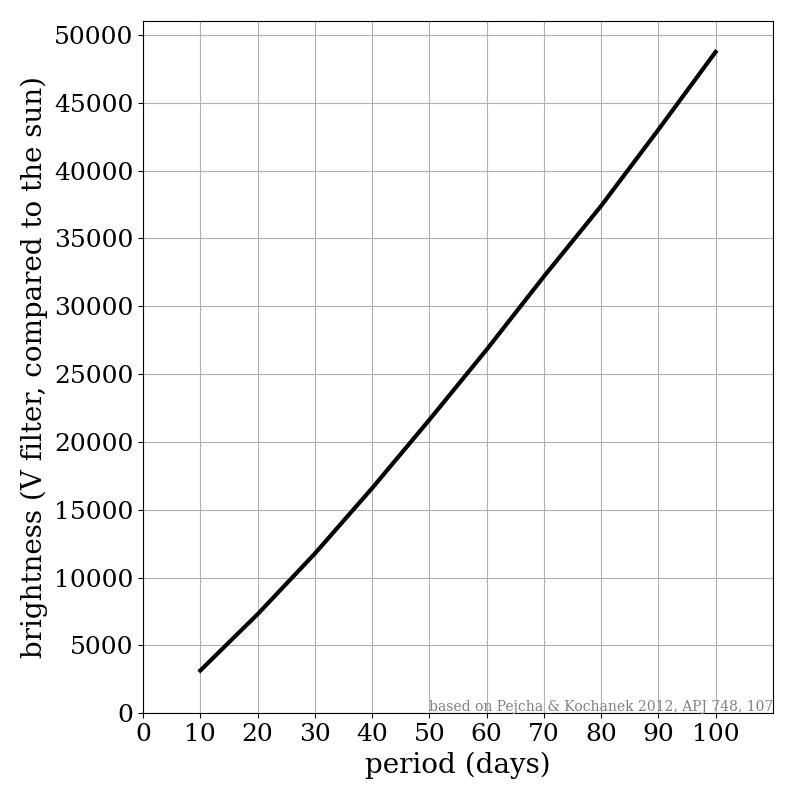
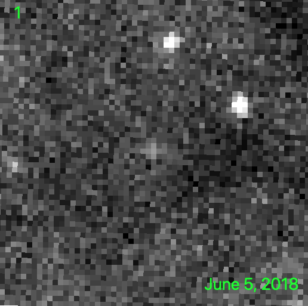
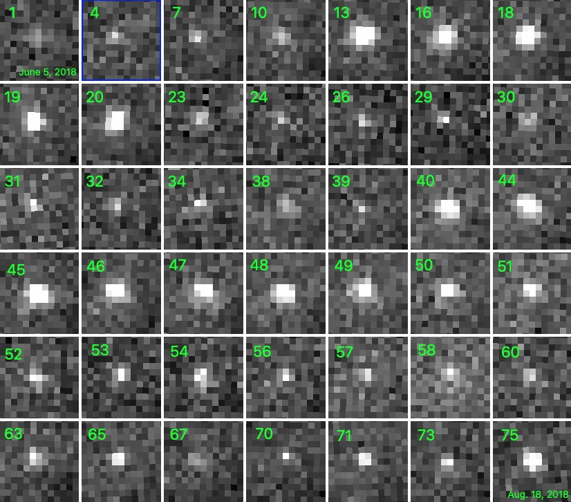
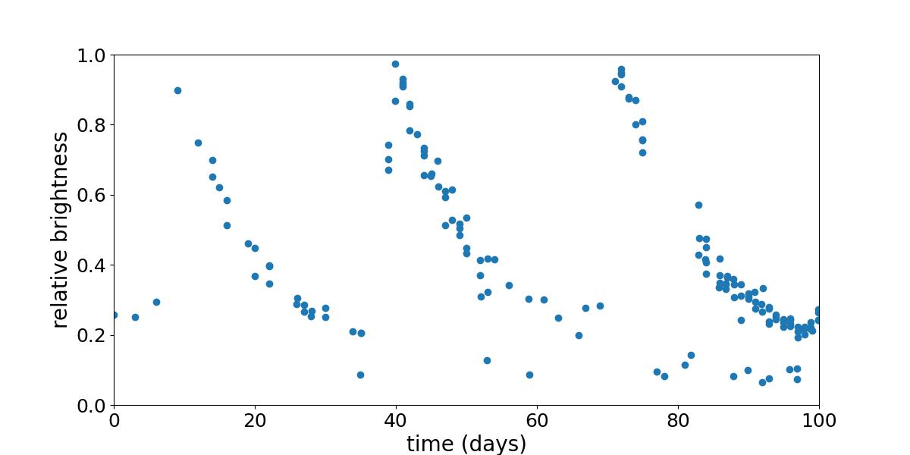

- V-band period-luminosity relation (simplified for use in video)

- lightcurve comparison for a 10 and a 25 day period Cepheid (not used in final video)

- period-luminosity relation (not used in final video)

- V-band period-luminosity relation (not used in final video)

- g-band postage stamps downloaded from ZTF archive, selecting images from 06/02 - 08/30, 2018 (download)
- used DS9 to manually create animation and frame-mosaic of images
- lightcurve file generated using ZTF catalog search, data selection, and export of data to Time-Series tool
- Python Jupyter notebook for producing lightcurve graphs of BASW1
- animation of BASW1 observations

- mosaic of BASW1 observations

- 100 day lighcurve of BASW1
